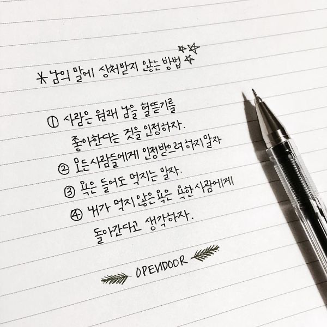
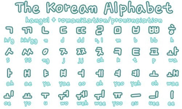

На корейском языке (кор. 한국어 / 조선말) разговаривают около 63 миллионов человек в Южной Корее, Северной Корее,
Китае,
Японии, Узбекистане, Казахстане и России. Невозможно утверждать, что существует несомненная связь корейского
языка с
другими языками, хотя некоторые лингвисты полагают, что он относится к алтайской языковой семье. Грамматика
корейского
языка очень похожа на грамматику японского языка, а 70% лексики произошло от слов китайского языка.

Необычность «хангыля» -корейского языка- заключается, в частности, в том, что сегодня нам доподлинно известно
кто, когда
и с какой целью его создал: корейский алфавит, которым пользуются и по сей день, был создан в декабре 1443
года
четвертым правителем из династии Чосон Сечжоном Великим для решения проблемы неграмотности населения. До
этого в Корее
использовались иероглифы, заимствованные из Китая. Сегодня студенты-корееведы осваивают сразу обе системы
письменности
для того, чтобы изучать двуязычную классическую литературу Кореи.
Корейская письменность настолько логична и структурирована, что может быть представлена в виде таблицы
Пифагора, где
вместо рядов и строк множителей представлены гласные и согласные буквы. Благодаря своей логичности и
системности хангыль
легко поддается оцифровке. Корейскую молодежь даже называют «племенем большого пальца»: юные корейцы
являются
рекордсменами по скорости набора текста на мобильных устройствах.
Начертание многих согласных букв имитирует способ их артикуляции. Хангыль также тесно связан с философией —
особенно с
конфуцианством и натурфилософией. Начертание гласных в корейском языке тесно связано с ключевым философским
концептом —
триадой «небо, земля, человек».
С другой стороны, овладение корейским языком — трудоемкий процесс, который невозможно свести только к навыкам
письма.
Корейский язык сильно дифференцирован с точки зрения устной и письменной речи, требуется глубокое понимание
культуры и
истории Кореи для того, чтобы в полной степени его освоить.

Из-за того, что на протяжении долгого времени и по сей день в Южной Корее наряду с хангылем принято
использование
иероглифов, корейцы мыслят нелинейно. Даже после изобретения корейского алфавита большинство корейцев,
которые умели
писать, продолжали писать на классическом китайском языке или на корейском языке, используя системы письма
иду и кугёль.
Корейский алфавит ассоциировался с людьми, занимающими низкое общественное положение, например, с женщинами,
детьми и
необразованными людьми. На протяжении XIХ-ХХ вв. комбинированная система письма, сочетающая в себе китайские
иероглифы
(ханчча) и хангыль, стала чрезвычайно популярной. Однако с 1945 года китайские иероглифы начали утрачивать
свое важное
значение для корейской письменности.
Кроме того, корейский язык отражает сложную систему социальных измерений: например, в корейском существует
три формы
обращения на «вы» и три формы на «ты», которые используются в зависимости от трех факторов — пола, возраста
и статуса.
Эта особенность отражается и в терминах родства и многочисленных синонимах. С точки зрения смысла для
корейцев наиболее
важно отношение между объектами и на ключевом месте в предложении всегда будет стоять глагол, в то время как
европейцам
более привычно мыслить категориально, предметно. Например, в корейском поэтическом тексте действует
сингармонизм, закон
гармонии гласных, именно поэтому для нас стихотворения по-корейски звучат непривычно, без рифмы и
поэтического размера.
В современной корейской литературе и неофициальной переписке, в основном, используется только хангыль, а в
написании
научных работ и официальных документах — сочетание хангыль и китайских иероглифов.